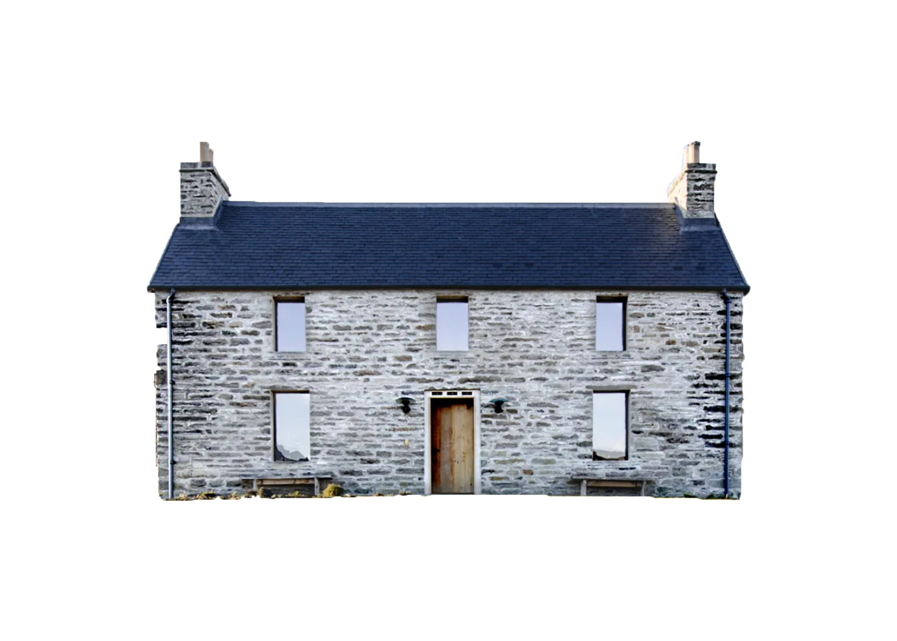

19 APRILE - GIORNO 4
COLAZIONE ED ULTIMO GIRO AD INVERNESS;
PARTENZA DIREZIONE ISOLA DI SKYE;
SOSTE DURANTE IL PERCORSO IN MATTINATA:
URQUHART CASTLE
,
FORT AUGUSTUS
;
PRANZO AL SACCO;
SOSTE NEL POMERIGGIO PRIMA DI ARRIVARE A SKYE:
ELIAN DONAN CASTLE
,
FAIRY POOLS
;
ARRIVO A SKYE NEL TARDO POMERIGGIO, CENA E PERNOTTAMENTO;
TEMPO DI PERCORRENZA: 3 ORE E 50 MINUTI (
MAPPA
);
PERNOTTAMENTO DI DUE NOTTI (19 E 20 APRILE) PRESSO LA STRUTTURA
ISOLA DI SKYE CARAVAN
;
COSTI CHALET € 751 (€ 375.50 A FAMIGLIA);
COSA FARE E VEDERE
SULL'ISOLA DI SKYE.